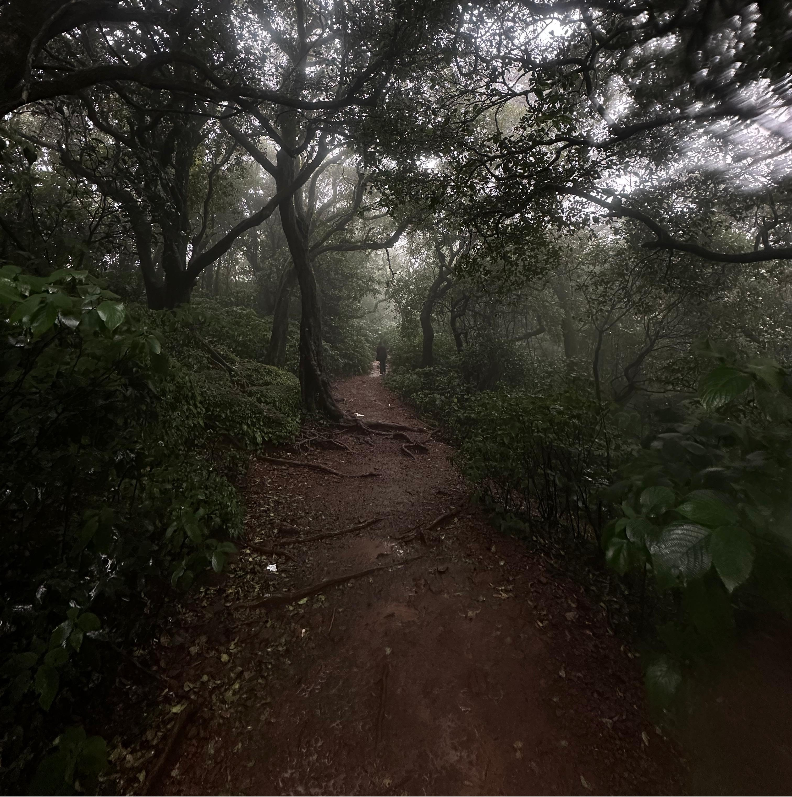
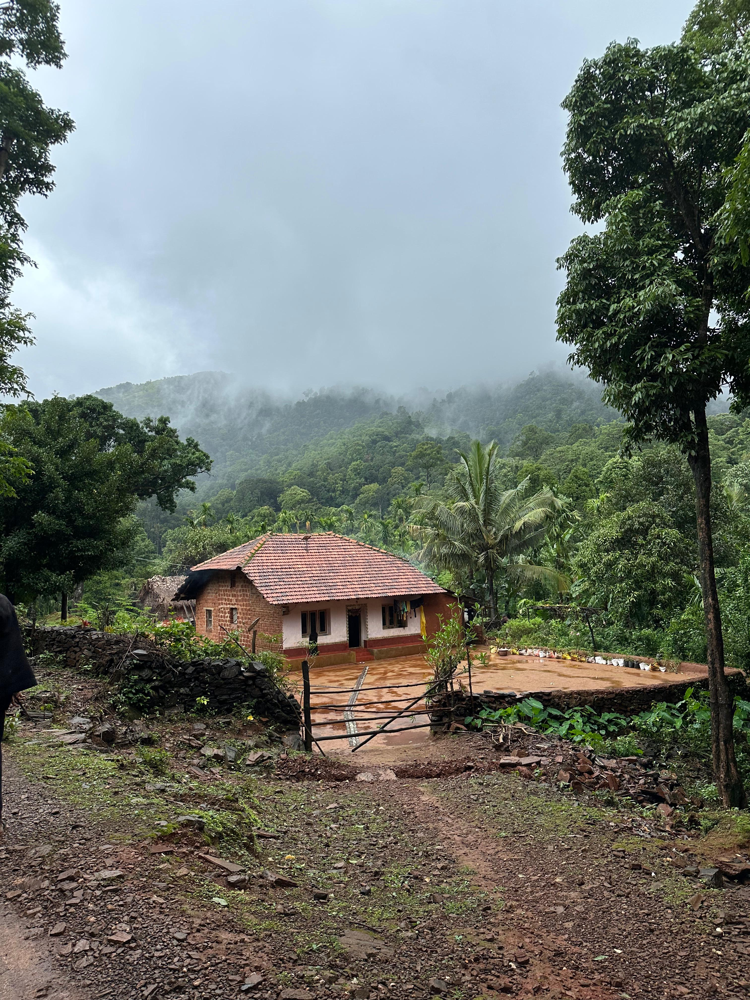
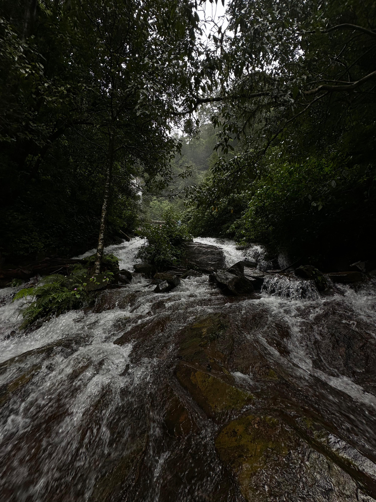
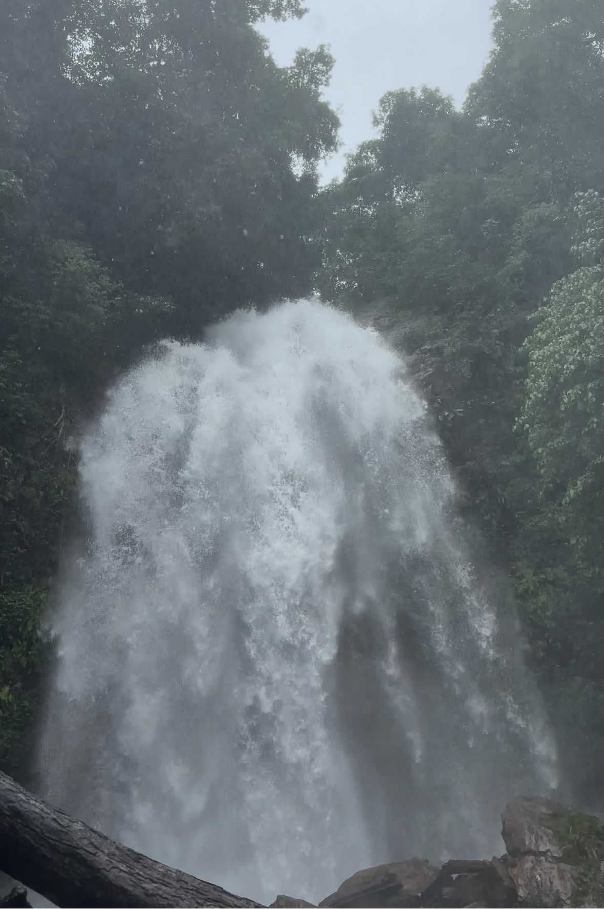
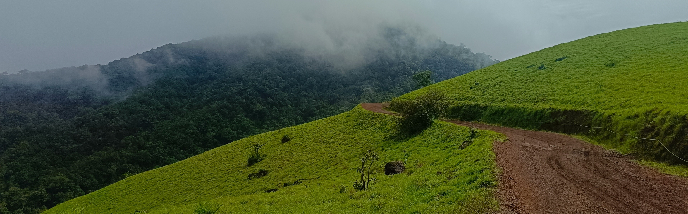

The Mountain
That Starts Wet
Kodachadri mornings hit different. You wake up and the mist is already in the trees. The birds are already going. The roads are wet from rain that came in the night and the plants have dew on them — every leaf, every blade of grass — like the mountain pressed its cold face against all of them in the dark. You start your trek from the forest checking camp at the base. You sign in. You go.
Within minutes, the forest takes you. Not gradually — immediately. The path is mud and water and drizzle all at once. The water enters your shoes with the confidence of something that belongs there. The mud is the good kind, the deep kind — red and mineral-rich, the colour of old iron. Your feet find it and it finds you back.
And then the leeches. If you haven't trekked Kodachadri in monsoon, you don't fully know what leeches mean yet. They cover your shoes the moment you slow down, finding every seam, every gap. They are not aggressive. They are simply thorough. The forest is their territory. You are the visitor. You learn to keep moving.


The forest section is fully enclosed — canopy over everything, roots underfoot, the drizzle finding its way down through the layers. You pass through it slowly. Not by choice. The trail is slippery in the way only monsoon trails are: not obviously, not all at once, but constantly and without warning. At least once, everyone goes down. The algae on the rocks is the responsible party. It has been there longer than the trail.
Walk through it anyway. The mud is part of it. The wet socks, the water in the treads, the leeches you don't notice until the rest stop — this is not the unpleasant part of the trek. This is the trek. Kodachadri in monsoon is this. The discomfort is the point of entry.
Then the forest opens. Not all the way — just enough. The view that comes through is the kind you don't expect from inside a forest. Farmlands. Coconut trees standing tall in the valley below, the kind of green that only exists when a cloud just passed. Cows. Buffaloes. Birds calling from tree lines you can't see into. The rain still coming down soft. For a moment the trail looks less like a trek and more like someone's morning.
Here is where it gets serious. The trail shifts from mud to exposed rock, and in monsoon the rock is a different surface entirely. Smooth from water flow, green with algae, cold and indifferent. At least once, everyone slips. There is no avoiding it. The rocks have been polished by water for centuries — they are not interested in your grip. You find your footing and you lose it and you find it again. That is how this section works.
Trekking poles or a stick help significantly on the algae section — not for balance so much as for confidence. Slow down before you think you need to. The rock looks manageable until it doesn't. Small waterfalls appear out of the hillside in monsoon, born from nowhere, running across the path. They are beautiful. They are also slippery. Both things.
There is a rope crossing on one of the ascending sections — a short rock climb, maybe five minutes, pulling yourself up with the fixed rope. It is steep enough to feel like climbing and short enough to not be afraid of. Do it in the order you're told. Everyone gets up.

Past the rope section, I looked at what I thought was a leaf hanging across the trail. It wasn't a leaf. It was a vine snake — green, the exact green of the forest it was draped in, with a pointed head and those strange forward-facing eyes. Binocular vision, like an owl. It was completely still. It had been there the whole time and I had nearly walked through it. Non-venomous to humans, but that felt beside the point. I stood and looked at it until it moved first.
The Western Ghats does this in monsoon. It wakes up completely. The green gets brighter — not just more of it, but a different quality of green, the kind that exists only when the forest is fully saturated with water. The leaf litter is dark and heavy. The slopes run with water in thin silver lines. The moss on the rocks puffs up. Being drenched in all of it, cold and tired and walking uphill — there is something in that. You feel very alive and you cannot explain it to anyone who has not been there.

You hear Hidlumane before you see it. The sound reaches you first through the canopy — low, continuous, unignorable. Then the trees part just enough and the falls appear between the leaves and branches: white and vertical, sixty feet of monsoon water coming off the rocky ledge with the kind of force that feels personal. In the dry season it is quieter. Right now it is not quiet at all.
Stand close enough to feel the mist on your face. This is not the polished viewpoint experience. The trail ends near it and you get as close as the rocks allow and you stand there with nowhere to be and the sound fills in all the space in your head that you came here to empty. That is what it does. That is why it is worth the slipping and the leeches and the mud in your socks.
In monsoon, the force is different — the water arrives faster and harder and the spray radius doubles. The pool at the base churns white. This is the falls as it was meant to be seen, full and serious and powerful in a way that makes the word waterfall feel too small for it.
The top of Kodachadri is not just a summit. It holds things. The Sarvajna Peetha — the Throne of Wisdom — sits here, where Adi Shankaracharya is said to have meditated and reached enlightenment. The plateau is often completely in cloud. The fog wraps around you and the shrine is ahead of you and the two together make for a particular kind of quiet that you don't find elsewhere. Pilgrims come here. Trekkers come here. The mountain holds both.

Below the summit, the Mookambika Devi temple draws people from all over the country. The story goes back centuries: the goddess Mookambika killed the demon Mookasura here, and the temple was built where it happened. Inside, the weapon said to have been used in that battle is kept — a metal that researchers have documented as centuries old, showing no rust, no decay. Make of that what you do. The temple is real. The devotion inside it is real. Whether you go for the mythology or the architecture or just the shelter from the rain — you go.
Kodachadri is named partly for its flowers. The kutaja — hill jasmine, girimallika — blooms across the hillside and gives the mountain its other name: the jasmine of hills. Thunbergia mysorensis hangs from the trees in long yellow and red cascades. Monsoon is peak bloom. The flowers don't care about the rain. They open wider for it.
The descent options are on foot through the forest or by jeep on the clay roads. The jeep is something you have to experience. On paper it is a vehicle on a mountain road. In practice it is a roller coaster that someone built on a cliff and forgot to finish. The red clay soil that covers most of the hill gets into everything — your clothes, your bag, your mouth if you sit near the driver's window. Sit there anyway. The views from that side are worth it.
The jeep lurches and tilts and the driver takes the corners with a confidence that looks, from the passenger side, like the confidence of someone who does not think about consequences. He has done this road more times than you can calculate. Trust him. Hold the handle. Look out at the red-clay hillside and the mist coming up from the valley and the forest closing behind you as you descend.
By 5 pm, Kodachadri in monsoon feels like night. The cold increases as the wet clothes stay wet. The trail and the roads go dark early. Reach base camp before the light goes. The mountain is generous in daylight. After dark, it belongs to something else.

The mist comes back in the evening the way it came in the morning — on its own schedule, without asking. By the time you reach the base camp the hill behind you is already gone, swallowed back into cloud, the falls silent at this distance and the flowers closed and the vine snake back in its leaf. The mountain packed itself away. You carry your version of it home in your wet shoes and your red-stained clothes and whatever version of quiet the falls put in your head.